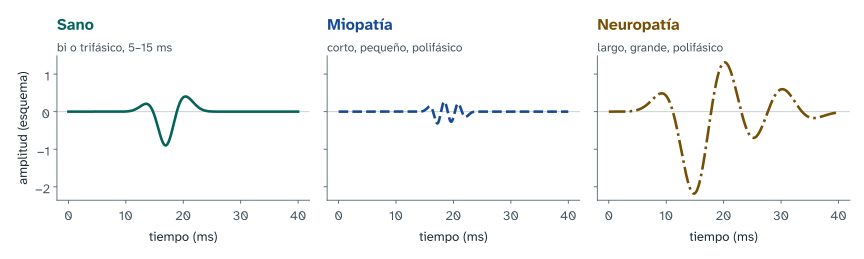
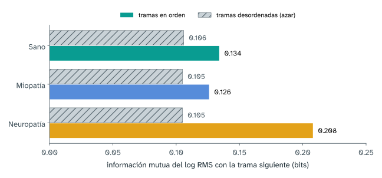
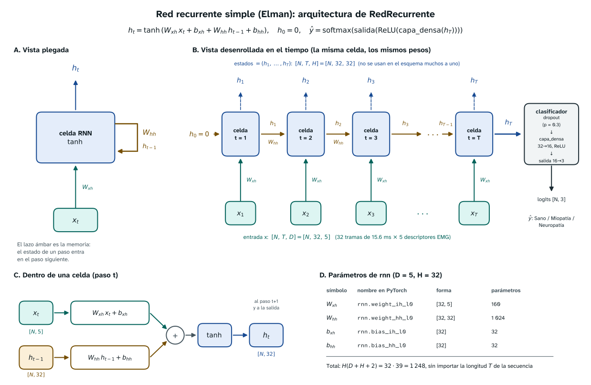
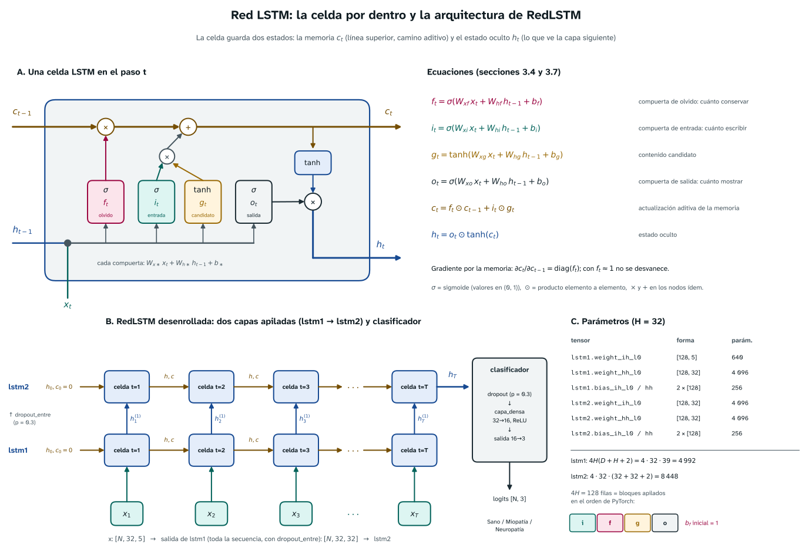

Redes recurrentes y LSTM para EMG de aguja
Sano, miopatía o neuropatía a partir de la señal
Centro de Estudios en Biomédica y Biotecnología
24 de octubre de 2026
El problema
¿Qué le pasa a la unidad motora?

| MUAP | Reclutamiento | |
|---|---|---|
| Sano | bi o trifásico, 5–15 ms, 0.2–2 mV | progresivo |
| Miopatía | corto, pequeño, polifásico | precoz |
| Neuropatía | largo, grande, polifásico | reducido, descarga rápida |
Cuatro miradas sobre el mismo ejemplo
- Clínica: ¿qué patrón de unidad motora hay detrás de la señal y qué decisión cambiaría?
- Procesamiento de señales: ¿qué parte del registro es fisiología y qué parte es red eléctrica, movimiento o equipo?
- Aprendizaje automático: ¿aprende el modelo algo que un método simple no capta, y lo comprobamos sin fugas?
- Didáctica: ¿qué debe poder explicar el estudiante al final, y con qué ejercicio lo demuestra?
El recorrido, de la aguja a la probabilidad
| Paso | Qué se hace | Secciones del cuaderno |
|---|---|---|
| Medir | leer los .asc a 32 768 Hz y explorar la señal |
1–2 |
| Modelar | filtrar, cortar en ventanas, secuencia de \(32 \times 5\), RNN y LSTM | 3–7 |
| Evaluar y usar | acierto, prueba del orden, diagnóstico por registro | 8–10 |
El modelo decide sobre ventanas de 0.5 s; el diagnóstico se da por registro, promediando sus ventanas.
Medir
Los datos: EMG de aguja
- 241 sujetos, bíceps y deltoides de ambos lados, 32 768 muestras por segundo
- La etiqueta está en el nombre del archivo, por ejemplo
EMG_001_01_RD_Hea.asc:
001 |
01 |
R |
D |
Hea |
|---|---|---|---|---|
| paciente | registro | lado (R o L) | músculo (B o D) | clase (Hea, Myo, Neu) |
Datos sintéticos
Las cifras de esta presentación salen de datos sintéticos con el mismo esquema. Muestran que el código funciona; no tienen valor clínico.
Explorar: un resumen por registro
| Mediana por clase | RMS (mV) | Pico a pico (mV) | Curtosis | Frec. mediana (Hz) |
|---|---|---|---|---|
| Sano | 0.27 | 3.4 | 6.1 | 240 |
| Miopatía | 0.12 | 1.6 | 3.5 | 468 |
| Neuropatía | 0.88 | 8.6 | 3.2 | 160 |
- Neuropatía: más amplitud y menos frecuencia; miopatía, lo contrario. Es lo que predicen los MUAP.
- Si cuatro números ya separan las clases, el modelo secuencial tendrá que ganarse su sitio.
¿Hay memoria entre tramas vecinas?

En neuropatía la autocorrelación tiene un pico cerca de 50 ms. Hipótesis, no conclusión: que haya dependencia no garantiza que el modelo la necesite.
Modelar
Preprocesar: dejar solo la fisiología
- Muesca en 50 Hz: quita el pico estrecho de la red eléctrica.
- Pasa-banda 20–3500 Hz: por debajo hay movimiento y deriva de la línea de base; por encima casi no hay energía de los MUAP.
- Diezmado por 4: de 32 768 a 8 192 Hz. Nyquist queda en 4 096 Hz, por encima de la banda útil.
Un registro de 3 s pasa de 98 304 a 24 576 muestras.
La secuencia: 32 tramas por 5 descriptores
Ventana de 0.5 s = 4 096 muestras; una trama = 128 muestras = 15.6 ms.
| Descriptor | Qué mide | Lectura clínica |
|---|---|---|
| log RMS | energía de la trama | tamaño de los potenciales |
| log WL | longitud de la curva | amplitud y complejidad |
| ZC | cruces por cero con umbral | contenido de alta frecuencia |
| SSC | cambios de pendiente | número de fases |
| Frec. media | centro del espectro | potenciales cortos o largos |
Entrada de la red: \(x \in \mathbb{R}^{N \times 32 \times 5}\).
La RNN simple: una celda que se repite

\[ h_t = \tanh\left(W_{xh}\,x_t + W_{hh}\,h_{t-1} + b\right) \]
El problema: el pasado se desvanece
Influencia de una entrada pasada sobre el último estado, \(\lVert \partial h_T / \partial x_t \rVert\), en redes sin entrenar:
| Red | 10 pasos atrás | 100 pasos atrás |
|---|---|---|
| RNN simple | \(1.4 \times 10^{-3}\) | \(0\) |
| LSTM, \(b_f \approx 0\) | \(1.8 \times 10^{-3}\) | \(2 \times 10^{-22}\) |
| LSTM, \(b_f = 2\) | \(1.0 \times 10^{-1}\) | \(2.1 \times 10^{-3}\) |
En la LSTM lo controla la compuerta de olvido: por eso el cuaderno empieza con \(b_f = 1\).
La LSTM: una memoria con compuertas

\[ c_t = f_t \odot c_{t-1} + i_t \odot g_t, \qquad h_t = o_t \odot \tanh(c_t) \]
Entrenar sin hacer trampa
- División por paciente (53, 11 y 16 pacientes): sus registros se parecen y el modelo podría reconocer a la persona, no la enfermedad.
- Clases desiguales: pérdida de entropía cruzada con pesos 1.36 para sano y 0.88 para cada clase patológica.
- Optimización: Adam con tasa \(10^{-3}\), lotes de 64, recorte del gradiente a 1 y parada temprana con validación.
Evaluar y usar
Resultados: aciertan incluso sin tiempo
| Modelo | Parámetros | Exactitud bal. por ventana | Por registro |
|---|---|---|---|
| RNN simple | 1 827 | 0.990 | 1.00 |
| LSTM, dos capas | 14 019 | 0.994 | 1.00 |
| Base sin tiempo | 33 | 0.992 | 1.00 |
La base es una regresión logística sobre la media y la desviación de cada descriptor. Que empate con la LSTM dice que el código funciona, no que la memoria aporte.
¿Usa la red el orden de las tramas?
Se barajan las 32 tramas de cada ventana de prueba, 10 veces: mismos valores, otro orden.
| Exactitud bal. por ventana | Orden original | Desordenado | Caída |
|---|---|---|---|
| RNN simple | 0.990 | 0.977 | 0.013 |
| LSTM, dos capas | 0.994 | 0.995 | \(-0.001\) |
Aquí la LSTM no usa el orden. Con los registros reales, esta prueba dirá si el modelo secuencial se gana su sitio.
Aplicación: un registro, una respuesta
| Clase | Probabilidad |
|---|---|
| Sano | 0.988 |
| Miopatía | 0.009 |
| Neuropatía | 0.003 |
11 ventanas, probabilidad por ventana, media del registro. Es apoyo, no diagnóstico: el informe sigue siendo del neurofisiólogo.
Cierre
Límites que hay que decir en voz alta
- Clínica: la señal depende de la posición de la aguja, el músculo y el nivel de contracción; habría que validar en otro hospital y con otro equipo.
- Señales: cinco números cada 15.6 ms pierden la forma fina de los potenciales.
- Aprendizaje: pocos pacientes, sin validación cruzada ni ajuste de hiperparámetros.
- Aviso: todas las cifras son de datos sintéticos. Es un modelo didáctico, no una herramienta diagnóstica.
Para esta semana
Laboratorio
Con los registros reales, repetir la línea base sin tiempo y la prueba de desordenar las tramas, y decidir con esos dos números si la LSTM aporta.
- GRU: cambiar la LSTM por una GRU. ¿Cuántos parámetros ahorra?
- \(T = 128\): tramas de 32 muestras. ¿Sufre más la RNN simple?
- Bidireccional: ¿qué forma tiene ahora \(h\)?
- Sin descriptores: una
Conv1dsobre la señal cruda. - Cinco semillas: media y desviación de la división por paciente.
- Por músculo: entrenar con bíceps, evaluar en deltoides.
Medir con cuidado, modelar lo justo
y comprobar que el tiempo importa.

AASI · Aprendizaje automático para el procesamiento de señales e imágenes médicas